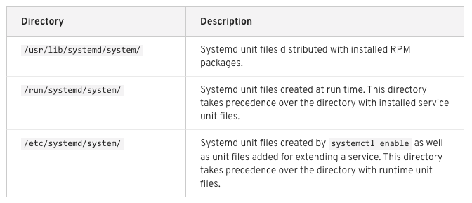

การจัดการ Service ต่างๆ ด้วย Systemd
แนะนำ Systemd
Systemd คือ ระบบบริหารจัดการระบบ และ service ต่างๆ ใน Linux (system and service manager) ได้รับการออกแบบ ให้ทำงานแทนระบบที่มีมาแต่เดิม SysV init Scripts นอกจากนั้น ยังมีลักษณะการทำงานที่เป็นรูปขนาน Parallel ในตอน เริ่มต้นการทำงานของระบบ และ ขณะของการ Boot ระบบ ทำให้ Linux Boot ได้เร็วกว่าเดิม โดยที่ Systemd จะออกแบบให้ส่วนต่างๆ หรือที่เรียกว่า units ที่ภายใน แต่ละ unit จะกำหนดไว้ใน Configuration files ใน directory
ชนิด Systemd Unit Types ได้แก่

ตำแหน่งของ unit file

คำสั่ง
# systemctl list-units --type service
# systemctl list-units --type target
โดยปรกติ คำสั่ง systemctl list-utils จะ display เฉพาะ ที่ active อยู่ เท่านั้น หากเราต้องการดูที่ unit ที่ถูกโหลด โดยที่ไม่ได้สนใจ state
# systemctl list-units --type service --all
 ความหมายของแต่ละ colume
ความหมายของแต่ละ colume
- Unit – the service name
- Load – gives status of the service (such as Loaded, Failed, etc.)
- Active – indicates whether the status of the service is Active
- Description – textual description of the unit
# yum instll psmisc
# pstree
systemd─┬─NetworkManager─┬─dhclient
│ └─2*[{NetworkManager}]
├─VBoxService───7*[{VBoxService}]
├─agetty
├─anacron
├─auditd───{auditd}
├─chronyd
├─crond
├─dbus-daemon───{dbus-daemon}
├─gssproxy───5*[{gssproxy}]
├─httpd───4*[httpd───26*[{httpd}]]
├─lvmetad
├─master─┬─pickup
│ └─qmgr
├─polkitd───5*[{polkitd}]
├─rsyslogd───2*[{rsyslogd}]
├─sshd───sshd───sshd───bash───sudo───su───bash───pstree
├─systemd-journal
├─systemd-logind
├─systemd-udevd
└─tuned───4*[{tuned}]
เมื่อดู pstree จะสังเกตุเห็นว่า systemd เป็น Process 1 ในเวอร์ชั่น ใหม่ๆๆ ของ Linux จะเกี่ยวของกับ systemd เมื่อ Application หรือ package ที่นำมาติดตั้ง นั้น จะมี file unit
# yum install mariadb mariadb-server
# rpm -qa | grep mariadb-server
mariadb-server-5.5.56-2.el7.x86_64
# rpm -ql mariadb-server-5.5.56-2.el7.x86_64 | grep service
/usr/lib/systemd/system/mariadb.service
# cat /usr/lib/systemd/system/mariadb.service
# systemctl start mariadb.service
# systemctl enable mariadb.service
Target นำมาควบคุม Start Level
- rescue.target
- multi-user.target
- graphical.target
- reboot.target
# systemctl get-default
multi-user.target
การ Starting และ Stopping Service
การ start systemd service ใช้คำสั่ง start
# systemctl start application.service
# systemctl start application
# systemctl stop application
# systemctl enable application
# systemctl disable application
# systemctl mask application
# systemctl unmask application
หากมีการเปลี่ยนแปลงแค่ configuration file ไม่จำเป็นต้อง restart service แค่ reload
# systemctl reload application.service
ต้องการดูรายละเอียดที่อยู่ในแต่ละ systemd file ใช้ คำสั่ง cat
# systemctl cat mariadb.service